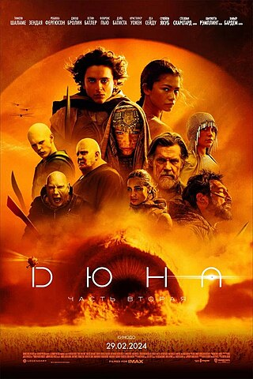

Год производства: 2024
Страна: США, Канада, ОАЭ, Венгрия, Италия, Новая Зеландия, Иордания, Гамбия
Жанр: 2024
Режиссёр: Дени Вильнёв
Сценарий: Дени Вильнёв, Джон Спэйтс, Фрэнк Герберт
Дюна - эпический научно-фантастический фильм 2024 года, снятый по мотивам романа Фрэнка Герберта «Дюна». Продолжение фильма «Дюна» (2021) и часть медиафраншизы с тем же названием. Режиссёром фильма выступил Дени Вильнёв, а сценарий в соавторстве с ним написал Джон Спэйтс. Главные роли сыграли Тимоти Шаламе, Зендея, Ребекка Фергюсон, Хавьер Бардем, Джош Бролин, Дейв Батиста, Стеллан Скарсгард. Работа над фильмом началась после того, как Legendary Entertainment купила права на экранизацию романа Герберта в 2016 году. Вильнёв подписал режиссёрский контракт в 2017 году, намереваясь создать двухсерийную экранизацию. Окончательное решение о съёмках второй части было принято после кассового успеха первой (в октябре 2021 года). Основные съёмки проходили в Будапеште, Италии, Иордании и Абу-Даби с июля по декабрь 2022 года. Премьера фильма состоялась 6 февраля 2024 года в Мехико и 15 февраля в Лондоне. В театральный прокат «Дюна: Часть вторая» вышла 1 марта 2024 года. За неполные первые три недели проката картина собрала более 500 миллионов долларов, став вторым самым кассовым фильмом 2024 года и уже превзошла по сборам первую часть трилогии. Картина получила почти исключительно положительные отзывы критиков. Ещё до премьеры Вильнёв начал работу над продолжением.